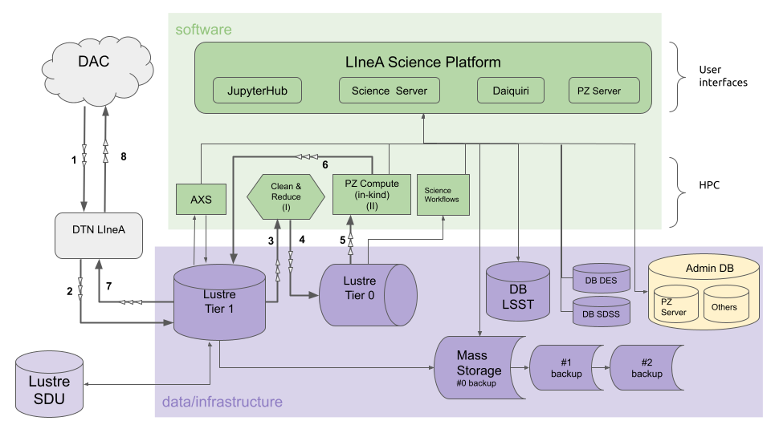

S4.4 - PZ Tables as Federated Datasets
During its ten years of operations, the Legacy Survey of Space and Time (LSST) will provide photometric measurements for billions of objects. Most of the foreseen LSST science cases will rely on photometric redshifts (photo-z) estimates for these objects.
The LSST project plan to provide at least one, possibly more, photo-z estimates for each object as part of each data release. Given the large and diverse scope of science that can result from the LSST data, a unique photo-z method is expected to not satisfy all the requirements of the whole community.
As part of the BRA-LIN in-kind contribution program, this contribution consists in offering photo-z tables as federated datasets for each data release, using a different photo-z method from the official estimates (to be defined by the DM team), thus expanding the scope of the science supported by the data releases.
The infrastructure required to produce, store, and deliver the photo-z tables will be provided by the Brazilian IDAC. The software development necessary to produce these tables, which include the optimization and refactoring of the DES photo-z pipelines to run on the LSST scale and the production of new pipelines to cover all steps of the data flow, is accounted for as a directable software development effort.
Software development
The initial plan of software development consisted of refactoring the pipeline Photo-z Compute from the DES Science Portal, to ensure scalability in LSST. The new pipeline would keep only the concepts of data preparation, parallelization, easy access to metadata, and provenance control. The LSST scale imposes the adoption of a completely different techlogoly from that used in the DES Portal.
A preliminary version of the new pipeline Photo-z Compute is being developed using Parsl to handle the parallelization and using the photo-z code LePHARE as an example of an algorithm for tests. The code under development is available on Github.
In mid-2022, the development team started an investigation to evaluate the possibility of reusing RAIL (open source, developed by DESC) infrastructure to support the production of photo-z tables. If the team decides to adopt RAIL, they would contribute to RAIL development by implementing the wrapper of the photo-z algorithm recommended by DM.
Planning for operations

The figure above shows a flowchart representing the data flow within the Brazilian IDAC infrastructure. The numbered arrows refer to the sequence of processes that involves moving data through the IDAC components. The roman numbers refer to processes involving data transformation:
- (1) Download LSST Objects Catalog from LSST Data Access Center (DAC) to LIneA's Data Transfer Node in DMZ.
- (2) Move LSST Objects Catalog to Lustre Tier 1
- (3) Read data
- (I) Apply data cleaning to create a "skinny table" to be used as input for photo-z pipelines (e.g., select columns, truncate extra decimal cases, etc)
- (4) Ingest skinny table into Lustre Tier 0 (fast throughput)
- (5) Read data
- (II) Run PZ Compute pipeline
- (6) Write the resulting PZ table on Lustre Tier 1
- (7) Move the PZ table to LIneA's Data Transfer Node in DMZ
- (8) Upload the PZ table to LSST DAC as a federated dataset